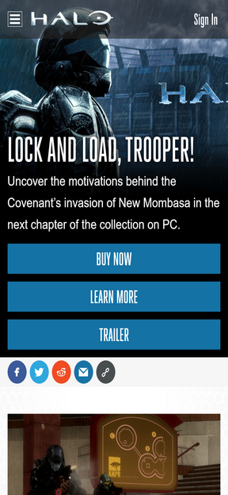

PARC: Contrast
Halo Waypoint
www.halowaypoint.com Contrast radio rating is 5.1 for those blue text on white text with all caps and thicker font helps people to read the words. This website has all kinds of different color pallete and each with different ratings but the cool part is that they all work really well together because of different game types has different color feels and styles. That's why the main image had white text to preserve the background color and those blue buttons are the same color as blue texts.
Hick's Law
Pokemon
pokemon.com![A snapshot of mobile screen of halowapoint.com to point out Hick's Law design principle. It contains four menu buttons of which each takes you to different website or to different list of actions. It also contains a hamburger button, which when clicked on, has 7 buttons. The first one takes you to homepage, second one takes you to Pokédex, third one takes you to Video Games & Apps, forth one takes you to Trading Card Game, fifth one takes you to Pokémon TV, sixth one takes you to Play! Pokémon Events, and finally the seventh one takes you to News. Both Trading Card Game and Play! pokémon Events has some other buttons when clicked upon. The first one has two buttons of which each are Pokémon TCG Online and TCG Online Leaderboards. The second one contains two buttons which are Play! Pokémon Events and Play! Pokémon Leaderboards. The Play! Pokémon Events had a lot of other category of buttons that leads to different specific website. The main page contains two articles. The first article picture is larger than usual and contains a Pokémon called Drednaw with epic background. Below the image contains a text that talks about Champion's path expansion. The second article picture contains two Pokémon and a Pokémon Players Cup II logo in-between. The Pokémon on the left is Urshifu and the Pokémon on the right is Coalossal. This article is about a Qualifier Online Copetition.](images/pokemon.png)
Pokemon.com shows a good example of Hick's Law because each button at the header leads to other related and seven or shorter list of buttons to choose from and not more. The main content has a list of articles to choose from and there aren't many to choose so that whichever of them that attracts attention can work well. It has an option on the bottom that allows user to view all of the articles. Upon clicking on it, it is also a short list, again with the option to load more news. This shows that the company is trying to keep as many small choices as they can but still provide the ability to view a lot more views.
Visual Hierarchy
YouTube
youtube.com![A snapshot of mobile screen of youtube.com to point out Visual Hierarchy design principle. It shows a YouTube feed list of two videos. Each video has a large Image then below each image on the left contains a channel picture then to the middle contains a video description then to the right is a hamburger button. Then beneath them has a channel name then total views then how old is the video. The first video has a picture of Master Chief in his halo 3 mark v armor with a pistol and facing in one direction. He is in some sort of a wildfire background. It also contains a description text in the middle of the image. It is also in the video description. It reads, '108 Kill Annilation w/ Killtastropie & Inconceivable' and is all caps in the image. The channel logo contains a headhunter skull with blue king crown. Channel name is Mint Blitz, it has 4,400 views, and was released two years ago. The second image is about Squidward pointing to himself in front of Planton pretending to be Mr. Krabs at Mr. Krabs' office. Squidward is mad about something. The channel image is YouTube typical image. The description reads, 'If you think I'm gonna stand out there all day listening to'. Channel name is ImmaSpongeBob, view count is 484,000 views and it was released eight years ago. Then below it contains YouTube typical action buttons such as Home, Trending, Subscriptions and Library buttons. Each with their respective icon.](images/youtube.png)
The most important is content image then channel image then the title and finally other important details such as channel name, total views, video length, and release date in terms of days or months or years. While youtube sets it up this way, it is up to the content creators to decide how well that looks and feels. Take a YouTuber Mint Blitz for example, he put the title directly into the image and his channel name directly into his description. Cleary he knew how Visual Hierarchy works so that he can try and catch more attention. So it is half and half between YouTube and YouTuber. YouTube is an excellent example of making it visually appealing to users.